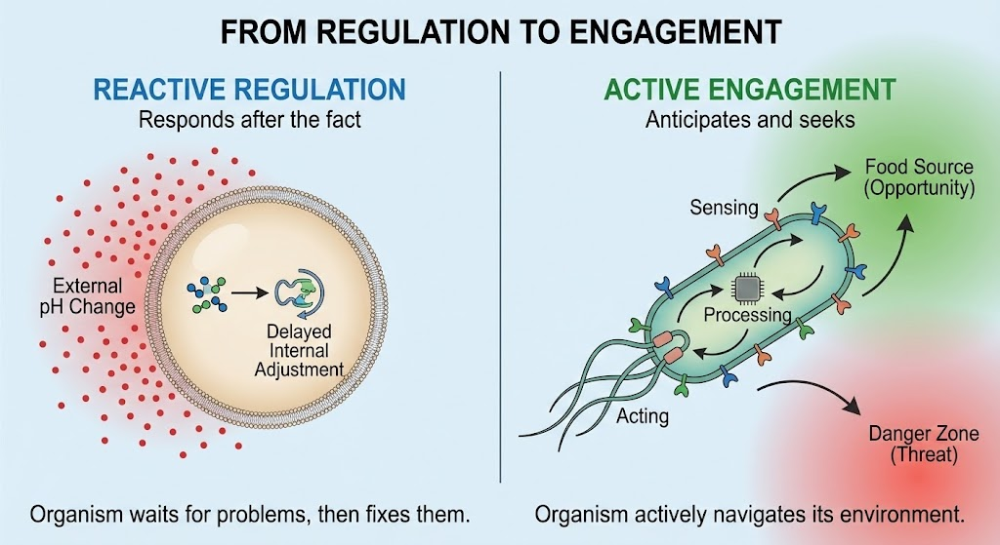
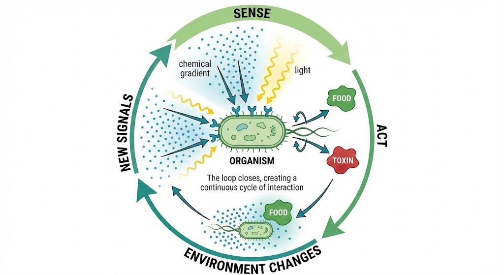
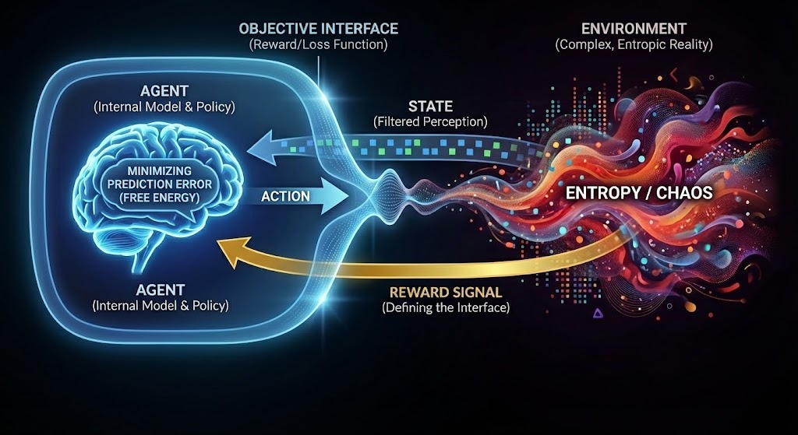
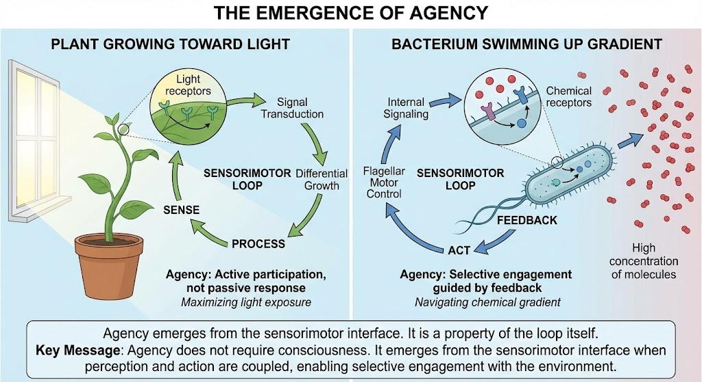
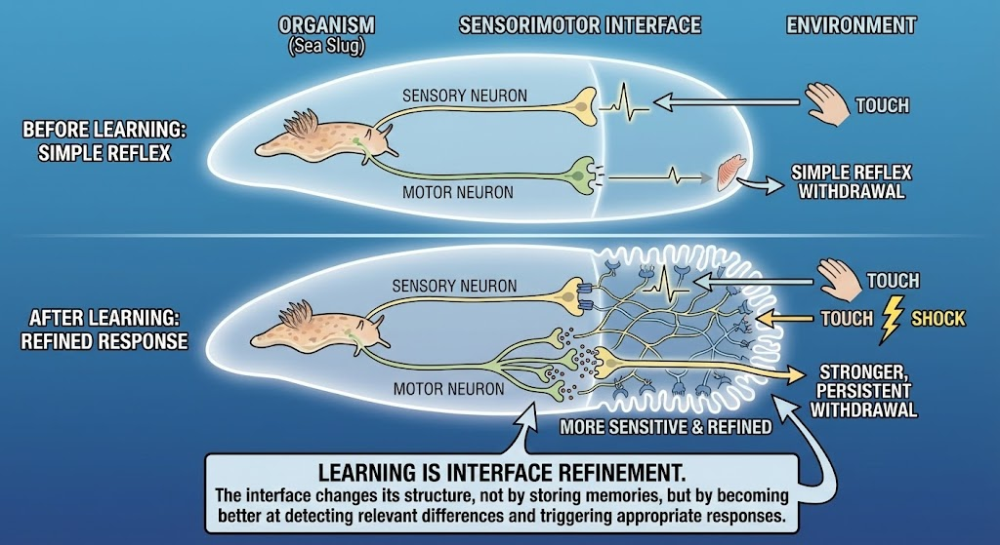
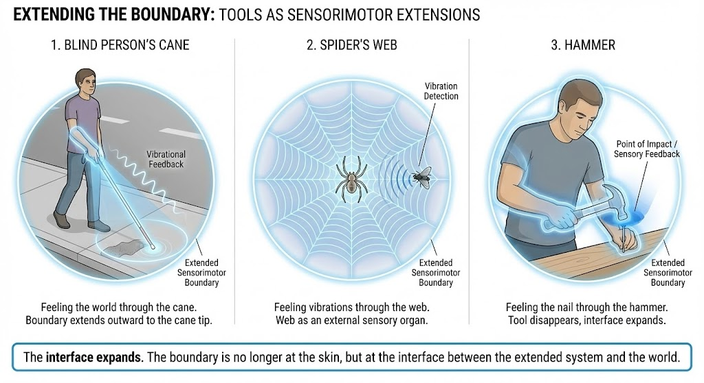

From Regulation to Engagement
The transition from reactive regulation to active engagement marks a fundamental shift. Simple organisms passively respond to environmental changes, but more complex organisms actively seek opportunities and avoid threats. This shift enables agency and purposeful behavior.
As shown above, this shows the crucial transition from passive response to active engagement. On the left, we see reactive regulation, an organism that responds after problems occur. On the right, we see active engagement, an organism with sensors and motors that can anticipate and seek opportunities. The sensorimotor interface enables this transition by creating a loop between perception and action, allowing organisms to actively shape their relationship with the environment rather than merely reacting to it.
The Sensorimotor Loop
The sensorimotor loop is the fundamental structure that enables agency. It creates a continuous cycle: sense → act → environment changes → new signals → sense again. This closure creates dynamic stability, enabling organisms to navigate and interact with their world.
As shown above, the sensorimotor loop diagram illustrates the continuous cycle that creates agency. An organism senses its environment, acts based on that sensing, which changes the environment, creating new sensory signals that guide further action. This loop is not a one-way flow but a continuous, bidirectional coupling. The interface is the loop itself, it's not a boundary between organism and environment, but the dynamic connection that enables them to co-produce each other. This closure creates the conditions for purposeful behavior and intelligence.
Perception as Active Construction
Perception is not a passive process of receiving information from the environment. It is an active process of constructing what counts as relevant. The sensorimotor interface filters the overwhelming flux of sensory data, selecting what matters for the organism's goals and needs.

As shown above, this contrasts two views of perception. The misleading view shows perception as building an internal picture of the world, a complete representation that is then used to guide action. The interface view shows perception as detecting only relevant differences. A bacterium doesn't build a model of the chemical gradient; it simply detects "more" or "less" and acts accordingly. A frog doesn't perceive all the details of a fly; it detects movement, size, and trajectory, just what's needed for action. Perception is not about accuracy, but about relevance for action.
"Perception is not about mirroring the world, but about constructing a world that enables action."
This construction is not arbitrary. It is constrained by the organism's needs, its history, and its current state. What an organism perceives is what it can act upon, what matters for its persistence and goals.
Action Shapes Perception
Action doesn't just follow perception, it actively shapes it. As organisms move and act, they reveal new aspects of their environment. The world is not pre-given; it is co-produced through sensorimotor interaction.

As shown above, this shows how action and perception are inseparably coupled in a continuous bidirectional loop. As a person navigates a room, their movement reveals new parts of the environment, which guides further movement, which reveals more. The organism and environment are not separate entities but are co-produced through sensorimotor interaction. The interface is the loop itself, the continuous cycle that connects them. This shows that we don't first perceive and then act; we perceive while acting, and acting while perceiving, in a seamless dance of engagement.
Affordances: The World as Invitation
An affordance is a relation between organism and environment. The same object offers different possibilities to different organisms, depending on their sensorimotor capacities. A chair affords sitting to a human, perching to a cat, and nothing to a bacterium.

As shown above, this demonstrates the relational nature of affordances. The same object, a chair, creates different possibilities for different organisms based on their sensorimotor interfaces. A human can sit on it, a cat can perch on it, but a bacterium cannot interact with it at all. Affordances are not properties of objects alone, but relations between objects and organisms. The world becomes a landscape of invitations and obstacles, different for each organism, structured by what they can perceive and act upon.
Action as Translation
Action is the translation of internal states into external effects. It is not just movement, but purposeful engagement with the environment. The sensorimotor interface coordinates perception and action, creating a loop that enables the organism to navigate and interact with its world.
This loop is not one-way. Action changes the environment, which changes perception, which changes action. This creates a dynamic interface that enables the organism to actively shape its relationship with the world.
The Emergence of Agency
Sensorimotor interfaces create the conditions for agency. An agent is a system that can act on its environment in ways that serve its own goals. This requires the ability to perceive what matters, to act effectively, and to maintain the sensorimotor loop that connects them.
As shown above, this shows how agency emerges from sensorimotor interfaces. A plant growing toward light and a bacterium swimming up a chemical gradient both demonstrate agency, active participation guided by feedback, not just passive response. Agency doesn't require consciousness or complex cognition; it emerges from the sensorimotor interface itself. The loop enables selective engagement with the environment, allowing organisms to pursue goals and maintain relations that serve their persistence. Agency is a property of the interface, not something added to it.
Without sensorimotor interfaces, there is no agency, only passive response. With them, organisms can engage with their environment, pursue goals, and navigate the world actively rather than reactively.
Control Without Centralization
Intelligence does not require a central controller. Well-structured interfaces can coordinate without central control, creating robust and flexible behavior. This is evident in distributed control systems like octopus arms or human walking.

As shown above, this shows how complex behavior can emerge from distributed sensorimotor interfaces without a central controller. An octopus's arms operate semi-independently, each with its own sensorimotor loops, while the central brain provides overall direction. Similarly, when we walk, our legs and balance systems operate automatically through distributed sensorimotor interfaces, allowing our conscious mind to focus on other things. Control emerges from the coordination of interfaces, not from a single command center. This distributed architecture is more robust and flexible than centralized control.
Learning at the Boundary
Learning does not require explicit memory. It is embedded in the dynamics of the interface itself. The interface learns by changing, and it changes by learning. This is evident in simple organisms like sea slugs that can modify their reflexes.
As shown above, this demonstrates learning as interface refinement. A sea slug that learns to withdraw more strongly when touch is paired with shock shows that learning is not stored in a separate memory system, but embedded in the structure of the sensorimotor interface itself. The interface becomes more sensitive, better at detecting relevant differences and triggering appropriate responses. Learning is the interface changing its structure, becoming better at its function. The boundary itself learns, refining its ability to filter and respond.
Extending the Boundary
Tools become extensions of the sensorimotor interface. The boundary relocates, and the organism and its tools become a single system. This is evident in a blind person's cane, a spider's web, or a hammer in use.
As shown above, this shows how tools extend the sensorimotor interface, relocating the boundary between organism and environment. A blind person feels the world through their cane, the boundary is no longer at the skin, but at the cane tip. A spider feels vibrations through its web, the web becomes part of its sensory system. When using a hammer, we feel the nail through the hammer, and the tool disappears into the interface. The interface expands, incorporating tools as extensions of the sensorimotor system, showing how boundaries are not fixed but can be dynamically extended.
Preparing the Ground for Cognition
By the time sensorimotor interfaces are in place, many capacities we associate with mind are already present in embryonic form. Selective attention, goal-directed behavior, adaptation, and anticipation all emerge from the sensorimotor interface.

As shown above, this shows how sensorimotor interfaces prepare the foundation for explicit cognition. Selective attention emerges from the filtering function of perception. Goal-directed behavior emerges from maintaining relations to food, safety, or other goals. Adaptation emerges from the learning function of the interface. Anticipation emerges from the predictive function of the loop. These are not separate faculties added later, but properties of the sensorimotor interface itself. The interface creates the foundation upon which explicit inference and higher cognition can be built.
Why Sensorimotor Interfaces Matter
Sensorimotor interfaces are the foundation of all meaning. Before symbols, language, or explicit thought, there is sensorimotor engagement. Meaning emerges from engagement, not from representation. The world becomes meaningful through the possibilities for action it offers.

As shown above, this shows sensorimotor interfaces as the foundation upon which all higher cognitive capacities are built. Symbols, language, and explicit thought emerge from this base, but they all depend on the sensorimotor engagement that gives them meaning. The world becomes meaningful not through accurate representation, but through engagement, through the possibilities for action it offers. Something matters because it can be acted upon. This is the foundation of all meaning, the hinge on which intelligence turns, transforming a neutral world into one structured by possibilities for action.
Key Concepts
- Perception: Active construction of relevant information
- Action: Translation of internal states into external effects
- Sensorimotor Loop: Dynamic coupling between perception and action
- Agency: Ability to act on environment to serve goals
- Engagement: Active interaction with the world
- Selective Attention: Filtering of sensory data based on relevance
Building on Biological Interfaces
Sensorimotor interfaces build upon biological interfaces. They rely on the self-maintaining boundaries established at the biological level, but add the ability to actively engage with the environment. This creates the conditions for cognition and intelligence to emerge.